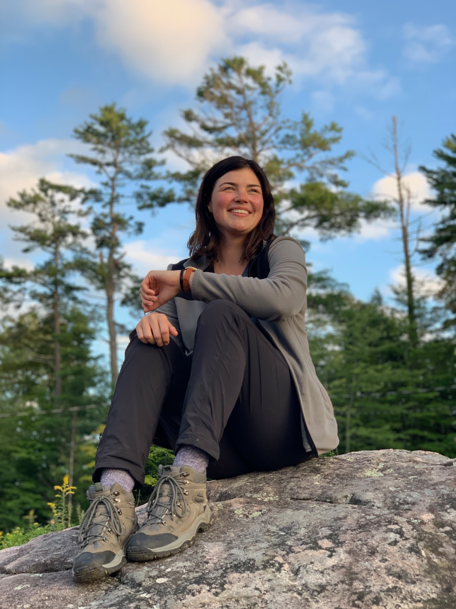

In the spring of 2020, I graduated from the Ecosystem Management Technician program at Fleming College. Continuing my education at Fleming College, I am currently enrolled in the Cartographic Specialist stream of the Geographic Information Systems (GIS) program. I have a passion for both forest and wetland conservation as well as sustainable living practices.
I currently live in Ottawa, Ontario with my partner and our cat, Clementine.
In my free time I enjoy hiking and taking photos of the natural world. My favourite subjects are birds and bugs. I also enjoy creating acriic landscape paintings.
I hope to bring my creativity and knowledge of colour theory
into my map design throughout my time in the GIS program at Fleming College.
In addition to painting and photography, I have been an avid baker my entire life. Lately I am enjoying baking many different types of breads.
You can usually find me in my kitchen baking something new at least once a week from September to April, not only because I prefer to bake in the colder months,
but also because baking is my favourite form of stress releif. It awards me a much needed break from school.
My christmas cake is my most requested creation, and I use a recipe that I adapted from my grandmother's recipe she baked every year while I was growing up.
If I wasn't persuing a career in the environmental and geographical sector, I would love to work in a bakery.